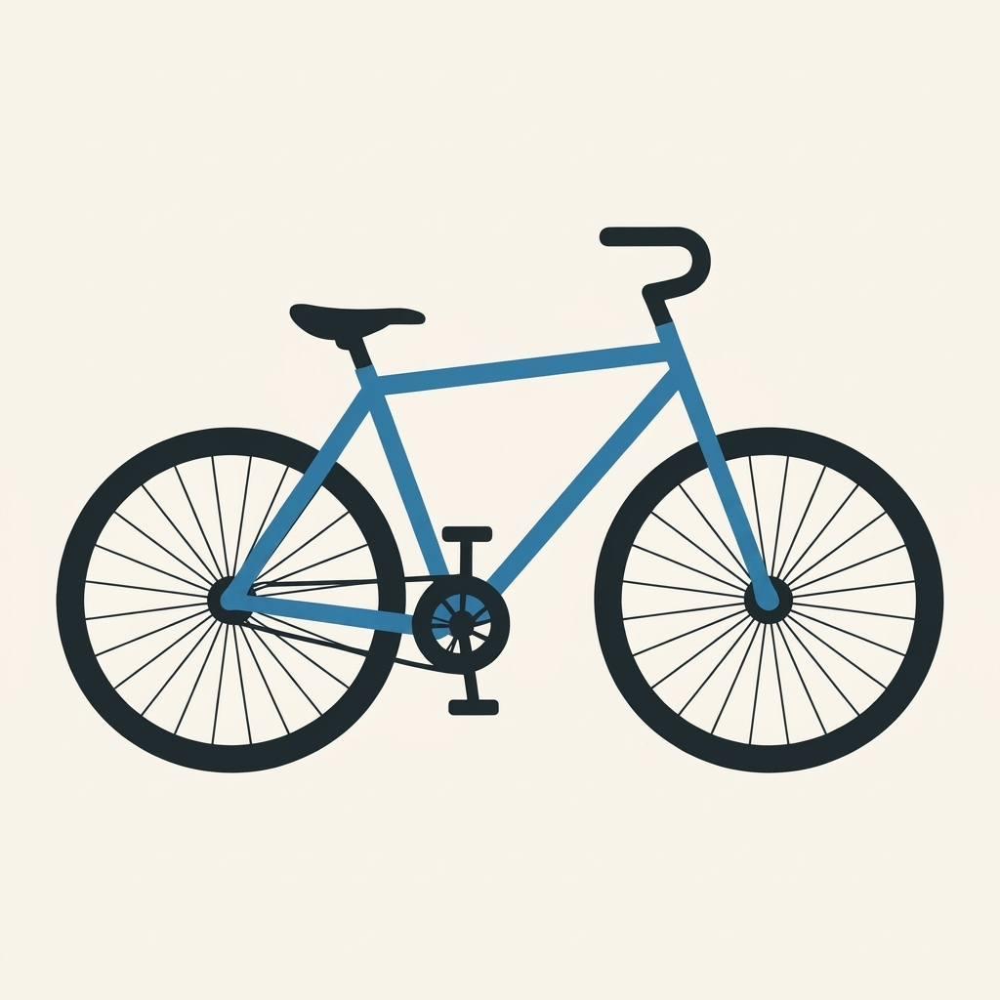
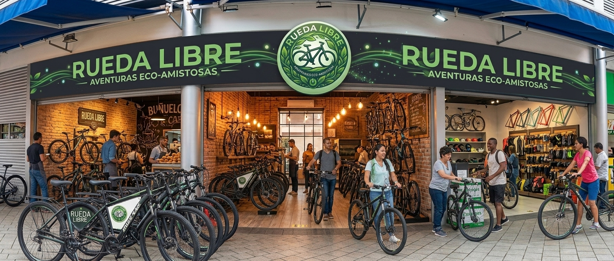
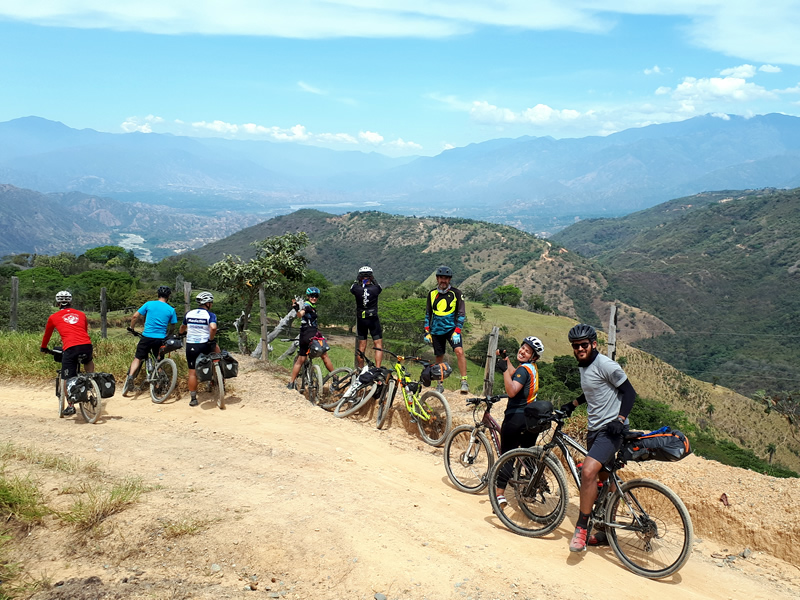
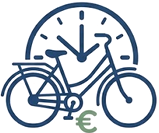

Alquiler Diario
Explora la ciudad a tu propio ritmo con nuestras bicicletas de alquiler diario.

Bienvenido a Rueda Libre, el compañero de tus verdaderas aventuras urbanas y naturales. Si deseas visitarnos directamente, puedes ir a nuestra sección de Encuéntranos.

Somos una empresa apasionada por la movilidad sostenible, brindando las mejores bicicletas para que explores la ciudad a tu propio ritmo.
Descubre nuestras increíbles opciones de alquiler y tours guiados.
Explora nuestras aventuras dinámicas aquíExplora la ciudad a tu propio ritmo con nuestras bicicletas de alquiler diario.

Únete a nuestros grupos de fin de semana para descubrir rutas históricas. Reserva con 24 horas de anticipación para asegurar tu cupo. Los guías hablan español e inglés.

Experimenta la ciudad a tu ritmo con nuestro servicio de alquiler por horas.

Sigue estos cuatro sencillos pasos para empezar a rodar:
Beneficios de nuestro servicio:
Estamos ubicados en San Javier el Danubio. Puedes ver nuestra ubicación exacta en el Mapa de Google.
¿Tienes dudas o sugerencias? Escríbenos directamente a nuestro correo electrónico: rueda@ruedalibre.com